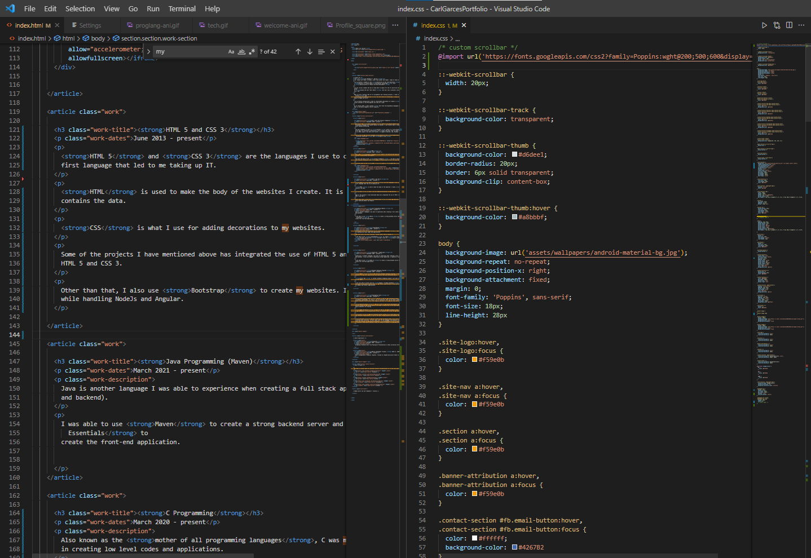

23, Single and ready to mingle, great team player and leader, ready to take on any challenge.
I am currently a student of the University of San Jose Recoletos. Taking up
Bachelor of Science Major in Information Technology with
a Specialization of Mobile and Web Development
I'm was curious student who has no idea what to expect for the IT course but enrolled anyway because I have a
dream
to become the next "Bill Gates". But now I am a innovator solving problems that people really
can't see.
When not busy creating code for IT assignments and creating projects. I tend to play and enjoy life to the
fullest and
think of something new for the future of technology. I enjoy time with my friends and family that
keeps me happy and alive.
I am currently working with a team of like-minded individuals to create a Mobile Application that
solves problems in the Philippines one step at a time.
As of January 2023, I have covered more than 15 programming languages and tools
that is currently needed in the IT Industry.
Dart (with the Flutter Framework)
September 2020 - present
Dart one of my Main Languages where I can develop Mobile and Web Applications in one
Programming language and convert easily to another. I use Flutter when I create Mobile front-ends with some
minor backend processing.
The main Framework in Dart is Flutter which is a cross-platform framework that allows me to
build apps for different architectures with a single code base. Want to make a mobile app for Android and iOS?
It is made simple to do both with Flutter. It supports Android, iOS, Windows, Linux and more.
This is by far my favorite language to use because of the simplicity when it comes to migrating to
different platforms and ease of use
PHP
September 2020 - present
PHP is my Secondary Language where I can develop Web Applications and Websites. This is more
focused on my backend development.
And with the help of the Laravel Framework, I am able to develop Web Applications and Websites
and integrate databases like MySQL or Oracle SQL for data handling.
I am also able to use PHP to create a REST API for my Mobile Application.
HTML 5 and CSS 3
June 2013 - present
HTML 5 and CSS 3 are the languages I use to create my websites. This is my
first language that led to me taking up IT.
HTML is used to make the body of the websites I create. It is the skeleton of the websites that
contains the data.
CSS is what I use for adding decorations to my websites.
Some of the projects I have mentioned above has integrated the use of HTML 5 and CSS 3. This site is made using
HTML 5 and CSS 3.
Other than that, I also use Bootstrap to create my websites. I also have covered using scss
while handling NodeJs and Angular.

Java Programming (Maven)
March 2021 - present
Java is another language I was able to experience when creating a full stack application (both front-end
and backend).
I was able to use Maven to create a strong backend server and Java GUI
Essentials to
create the front-end application.
C Programming
March 2020 - present
Also known as the mother of all programming languages, C was my foundation in programming. Used
in creating low level codes and applications.
My works with C are more function - based rather than ui based
I was able to use C Programming to create a Full Stack Applications that
encrypts and decrypts messages using the Caesar Cipher algorithm.
JavaScript / TypeScript
September 2020 - present
JavaScript is another language I was able to experience when creating a full stack application (both front-end
and backend). I was also able to experience using TypeScript, a superset of JavaScript.
I was able to use Node.js to create a strong backend server and Angular to
create the front-end application.
Database Managing Programs
September 2020 - present
MySQL is one of my favorite database managing programs. I was able to use it to create a
database for my other applications and websites that were mentioned above.
Oracle SQL is another database managing program I was able to use. Has more features packed in
it than MySQL.
I was also able to access and use Google's Firebase Database. This is a NoSQL database that is
very easy to use and is mostly used for my Flutter applications. I also use it ocassionally for my data storage
for Nodejs and Flutter Applications.
System Management and Deployment Services
September 2022 - present
Microsoft Azure is a cloud computing service that I was able to use to host my websites and
deploy my online applications. I was able to use it to host my Wordpress and Online SQL
Databases
Google Cloud Platform is another cloud computing service that I was able to use to host my
websites and deploy my online applications. I was able to use it to access Google API services that was needed
in my applications such as Google Maps API and Directions API.
Netlify is another cloud computing service that I was able to use to host my websites and
deploy my online applications. Currently I am using this service to deploy this portfolio page I
created.
Programming Tools
June 2013 - present
Visual Studio Code is my go to IDE for my programming needs. It is very easy to use and
incredible lightweight. It covers a lot of extensions that can be used to make your programming experience
better whether it be Flutter, PHP, Angular and more. It is my most used IDE since 2019. Microsoft's
Visual Studio is my second editor to VS Code. I mainly use for my Java and C Programming needs.
Android Studio is my go to IDE for my Android Development needs. It is my alternative for
Flutter Coding and my second editor to VS Code and Visual Studio. I mainly use it for easy android debugging and
for creating my
mobile emulators for testing
MySQL Workbench is my go to IDE for my MySQL database needs. It is for handling and easy access
to my databases. Oracle XE is another tool I use for my Oracle SQL needs.
Git, Github and GitKraken is my go to version control system. It is very easy to use and is
very useful for saving
the statuses of my projects. I use it for most of my projects from Flutter, PHP and other projects.
Eclipse is my go to IDE for my Java Maven needs. It is very easy to use and is very handy for
accessing Java libraries. It also comes with its own debugger and Database Access that makes it easier for me to
check the statuses of my external databases. Netbeans is another IDE I use for my Java needs.
It contains a GUI editor making it easy to create UI elements for my applications.
Postman is my go to tool for my API testing needs. It is a tool for testing and debugging my
API paths, headers, bodies, and endpoints. It is very easy to use and is very handy for ensuring that what data
I am expecting is what I will get. Insomnia is another alternative I use to check my API paths
and endpoints.
Azure Portal is my go to tool for my Azure needs. It is a tool I use to handle anything I
manage and deploy in Azure
Desgin Tools
June 2013 - present
Canvais my most prefered tool for my designing needs. A quick and easy tool for creating UI,
backgrounds, icons and more. It is very easy to use and is very handy for creating my designs. I use it for most
of my Icon designs and UI backgrounds for my Flutter, PHP and other projects.
Adobe Photoshop is my go to tool for my design needs. It is very easy to use and is very handy
for creating my designs. I use it for most of my Icon designs from Flutter, PHP and other projects.
Figma is my go to tool for my UI design needs. It is very easy to use and is very handy for
making mock-up designs for an upcomming application. Adobe XD is an alternative I use for Figma
for offline use.
About Myself
Get in touch
My inbox is always open for possible project collaborations or if you just want to say hi!